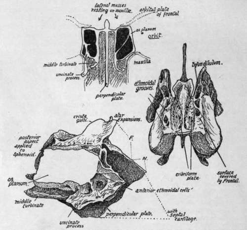

Ethmoid
Description
This section is from the book "The Anatomy Of The Human Skeleton", by J. Ernest Frazer. Also available from Amazon: The anatomy of the human skeleton.
Ethmoid
This bone lies immediately below the ethmoidal notch in the frontal bone, which is therefore closed by its upper surface, is applied to the front aspect of the sphenoidal body, and rests below on and between the two maxillae. It thus forms the walls of the upper portion of the nasal fossa.
It consists of :-(a) A median perpendicular plate which forms part of the bony septum of the nose, articulating with the other elements of the septum, (b) An upper horizontal cribriform plate, that is seen in the notch of the frontal, and is so named because it is pierced by numerous foramina for the filaments of the olfactory nerves : the inner edges of the orbital plates of the frontal rest on the horizontal top of the bone.
The upper part of the vertical plate appears above the cribriform plate in one region to make the strong process of the crista galli. (c) A lateral mass on each side suspended from the edges of the cribriform plate and consisting of an intricate series of thin-walled air cells attached to the inner aspect of a thin lateral plate termed the os planum or lamina papyracea. It is this lateral mass that rests on the maxilla. The mass of air cells constitute what is termed the labyrinth.
The superior surface (Fig. 188) shows :-(a) A lateral area on each side articulating with the orbital plate of the frontal. These surfaces usually exhibit broken air cells which are completed by the frontal. The anterior orbital or ethmoidal groove is seen running inwards and forwards across this surface, and the posterior groove lies a little behind it.
(b) The cribriform area supports the olfactory bulbs. It is covered by dura mater, under which the nasal nerves run forward from the anterior orbital grooves beside the crista galli to reach a notch on each side on the front border of the bone (sometimes completely closed in) in which they lie, between the ethmoid and the frontal : the anterior ethmoidal arteries run with them.
Fig. 188.-Ethmoid. Upper figure is a scheme showing how the bone consists of a central " perpendicular plate " connected above by a horizontal piece with the lateral masses which rest on the maxilla?, and how the outer walls of these lateral masses are formed by thin laminae (os planum) which are in the inner walls of the orbits. The lateral masses are composed of air-cells, from the inner walls of which upper and middle turbinates are suspended and are thus connected with the roof. The orbital plates of the frontal rest on the horizontal piece of the ethmoid. On the right is the ethmoid seen from above, and on the left a view from the right side. Jr., extent of articulation with frontal ; N., with nasal bones.
This surface is flush with the jugum sphenoidale behind, where it is notched to receive the " spine " of the sphenoid.
The lower surface of the plate forms part of the roof of the nasal fossa, and is therefore continuous in front with the small nasal areas on each side of the nasal spine of the frontal.
Vertical Plate
The crista galli comes above the horizontal plate as a thick process to which the falx cerebri is attached, and from which strands of dura mater spread out over the neighbouring bones. In front of it the foramen caecum of the frontal is placed, so that the crista forms its back wall and broadens out into two ala to cover it.
The rest of the vertical plate is in the septum, and is drawn down below into an angle (Fig. 193), that fits in between the vomer, which articulates with its postero-inferior border, and the cartilage of the septum, that is fastened to its antero-inferior border. The upper and front part of the plate, just in front of the crista galli, comes in contact with the nasal spine of the frontal between the small nasal areas on that bone, and projects beyond this to support the two nasal bones. Behind, it comes up against the crest and top of the rostrum of the sphenoid. It is covered by mucous membrane and, deep to this, is grooved to carry olfactory fibres and their arachnoid coverings.
The Lateral Mass is applied to the front of the sphenoidal turbinal : it rests below on the inner and upper part of the maxilla, but its posterior part is separated from this bone by the vertical plate of the palate. The os planum forms the greater part of the inner wall of the orbital cavity : it does not, however, extend so far forward as the rest of the mass, and the deficiency is filled by the lachrymal bone, which thus articulates with the anterior margin of the os planum and partly covers in the exposed " labyrinth." The os planum is in a plane with the side wall of the sphenoidal body and turbinal, and the lachrymal connects it with the nasal process of the maxilla in front.
The labyrinth of the lateral mass consists of a number of air cells, with very thin walls, that are arranged in groups-anterior, middle, and posterior-which do not communicate directly. These cells are attached to the inner aspect of the os planum and project into the cavity of the nose. From their inner surfaces thin curved sheets of bone curve downwards and outwards and are known as the upper and middle turbinate bones : they are, of course, only portions of the ethmoid. A scheme of the arrangement is shown in Fig. 188. The middle turbinal comes down below the level of the lateral plate and can be recognised at once. The middle meatus of the nose lies below the middle turbinal, and the infundibulum runs up from the front part of this to the frontal sinus, and the position of the infundibulum can be recognised on the bone (Fig. 188) as a canal running upwards and forwards on the inner side of the mass that is exposed in front of the os planum, and continues below with the groove below the middle turbinal.
It is evident that the lachrymal must cover in the infundibulum and form its outer wall here if it is not separated from it by cells in this situation, which is the usual condition : many incomplete cells may be seen round it which will be completed by the lachrymal, frontal, and maxilla.
An uncinate process passes downwards and backwards from the front and lower part of the mass, outside the middle turbinal (Fig. 188), to articulate with the inferior turbinate bone and partly fill in the opening of the maxillary antrum, but this is not often seen complete on the disarticulated bone.
If the lateral mass is removed and looked at from the inner side the upper and lower turbinals are seen suspended from the inner wall of the ethmoidal cells : the superior meatus is between the two turbinals (see Fig. 194). Fig. 198 gives the appearance presented by the bones on section in situ. For further details of this region, see p. 2.)4.
The lower walls of the middle ethmoidal cells form the part of the lateral mass that rests (Fig. 188) on the maxilla, and the middle turbinal is a direct continuation of these walls, so that when the walls become deficient behind the attached border of the middle turbinal obtains another articulation, with the palate bone, the vertical plate of which is here between it and the maxilla.
The ethmoid articulates with the sphenoid and its turbinals behind, the palates below, maxillcB below and also in front, lachrymals laterally in front, frontal above, and above and in front centrally, the two nasals and the vomer with its perpendicular plate, and the two inferior turbinals through its uncinate processes.
Development
The nasal fossae are at first enclosed, with the exception of their lower regions, by a cartilaginous capsule which is continuous over the roofs of the fossae with the cartilaginous septum : cartilaginous supports grow from this into the turbinal masses and map out the air cells in part. Ossification starts on the surface of this capsule, just behind the lachrymal region, in the fifth month, and extends slowly into the cell walls and turbinates of the lateral mass, so that at birth the mass is practically ossified. The septum, however, is still cartilaginous, and the roof is fibrous, the cartilage having disappeared here. A centre appears in the membrane on each side of the upper part of the septal cartilage during the first year, and from this the bony plate is slowly formed during the next four or five years ; the crista galli is made by an early extension from these centres. The bony lateral mass in the meantime has extended its ossification into the roof and this joins with the completed septum.
Continue to:
- prev: Spheno-Maxillary Fossa
- Table of Contents
- next: Lachrymal